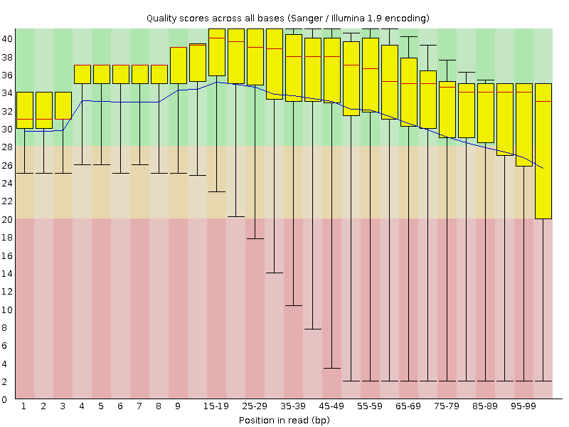
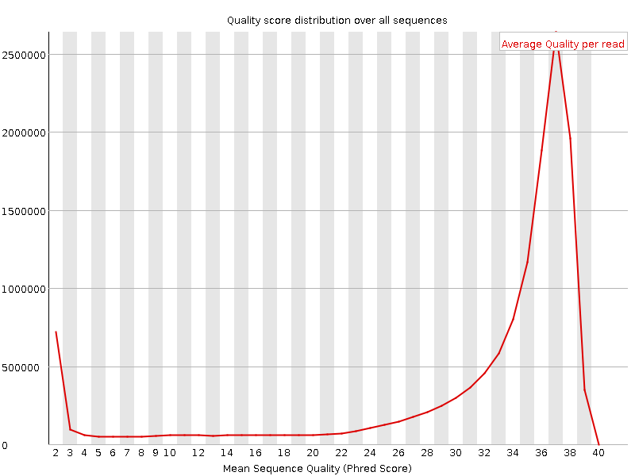
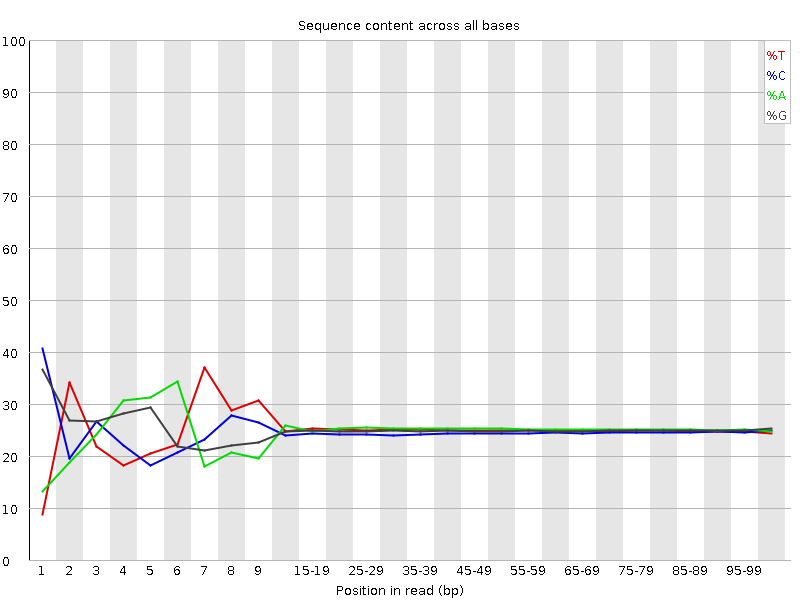
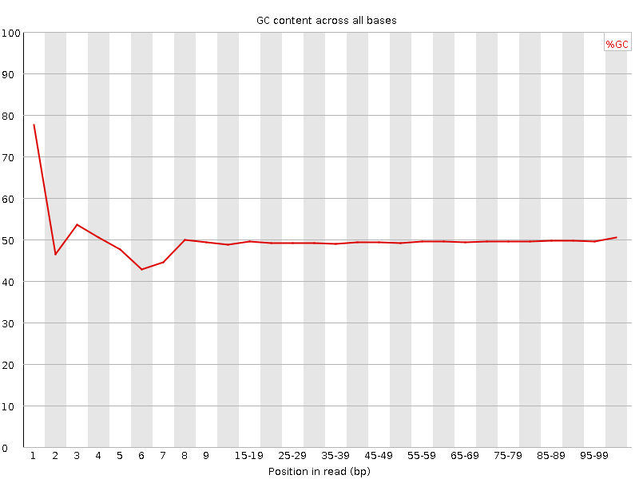
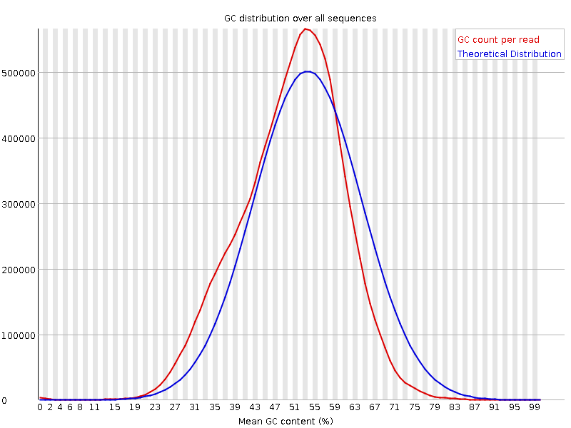
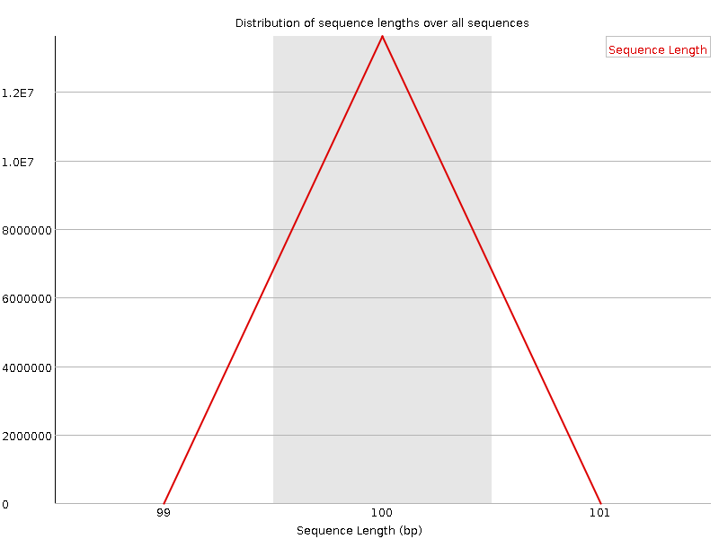
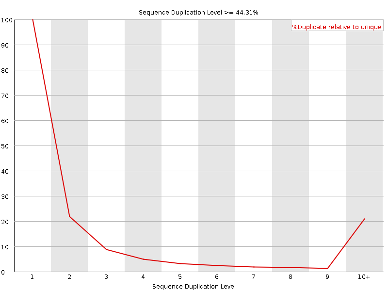
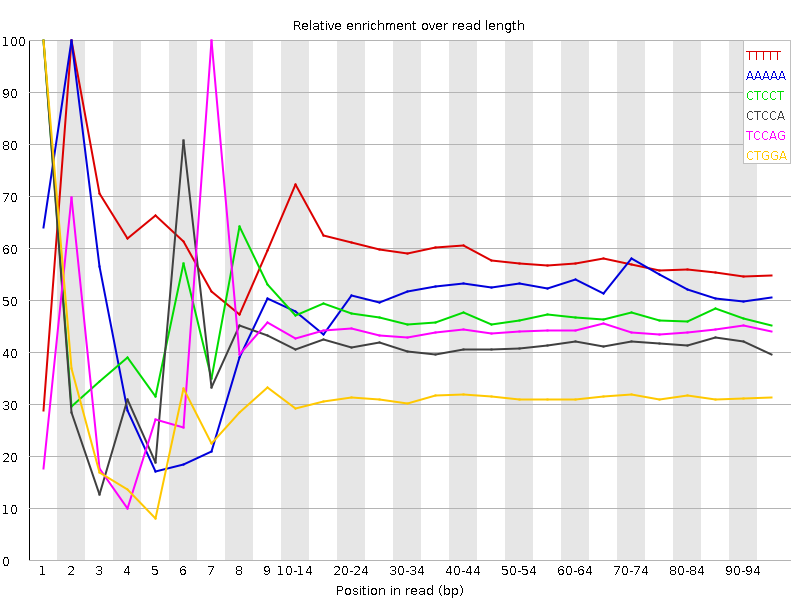

![[OK]](Icons/tick.png) Basic Statistics
Basic Statistics
| Measure | Value |
|---|---|
| Filename | F_diaphanus_NA_FW_3_R2.fastq.gz |
| File type | Conventional base calls |
| Encoding | Sanger / Illumina 1.9 |
| Total Sequences | 13622481 |
| Filtered Sequences | 0 |
| Sequence length | 100 |
| %GC | 49 |
Per base sequence quality

Per sequence quality scores

![[FAIL]](Icons/error.png) Per base sequence content
Per base sequence content

Per base GC content

![[WARN]](Icons/warning.png) Per sequence GC content
Per sequence GC content

Per base N content

Sequence Length Distribution

Sequence Duplication Levels

Overrepresented sequences
No overrepresented sequences
Kmer Content

| Sequence | Count | Obs/Exp Overall | Obs/Exp Max | Max Obs/Exp Position |
|---|---|---|---|---|
| TTTTT | 6117375 | 4.7279735 | 8.003377 | 2 |
| AAAAA | 5666945 | 4.2560787 | 8.343772 | 2 |
| CTCCT | 3134915 | 2.5634391 | 5.438582 | 1 |
| CTCCA | 2943605 | 2.3932436 | 5.7508235 | 1 |
| TCCAG | 2911520 | 2.3189516 | 5.3075185 | 7 |
| CTGGA | 2937155 | 2.2917297 | 7.3165855 | 1 |
| GAAGA | 2981570 | 2.2570405 | 6.2140512 | 2 |
| AAGAA | 2957860 | 2.2302582 | 5.125381 | 2 |
| CTTCA | 2746755 | 2.191618 | 5.015431 | 1 |
| GGAGA | 2646760 | 2.0115266 | 5.4070497 | 1 |
| GAAAA | 2599790 | 1.9602696 | 6.31871 | 2 |
| CTGAA | 2414475 | 1.8764731 | 5.33647 | 1 |
| CTTTT | 2374525 | 1.8700323 | 5.4189663 | 1 |
| GTTTT | 2361155 | 1.8216352 | 7.944592 | 1 |
| AAAAT | 2338970 | 1.7667505 | 5.217023 | 3 |
| CTTTG | 2230995 | 1.7538723 | 5.1256404 | 1 |
| CTCAG | 2175235 | 1.7325193 | 5.436111 | 1 |
| GGAAG | 2216280 | 1.6843635 | 5.7998323 | 1 |
| GGAAA | 2133240 | 1.6148571 | 7.2528815 | 1 |
| CTGGG | 1949095 | 1.5268147 | 5.56791 | 1 |
| GGGAG | 1869465 | 1.4264133 | 5.18315 | 1 |
| GTTTG | 1813250 | 1.3964378 | 5.0404763 | 1 |
| GGGAA | 1668555 | 1.2680948 | 5.1663475 | 1 |